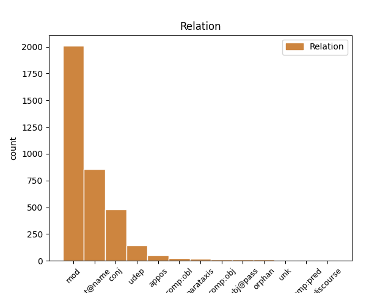
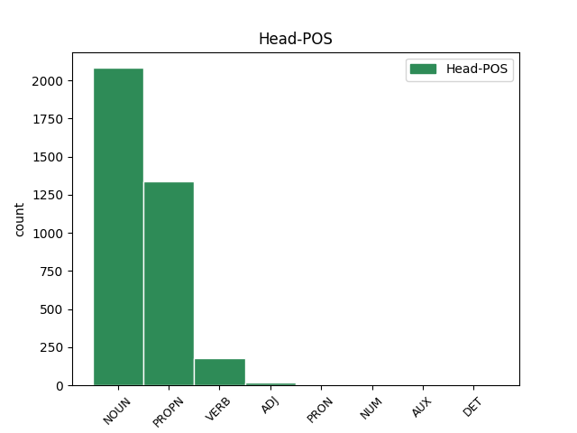
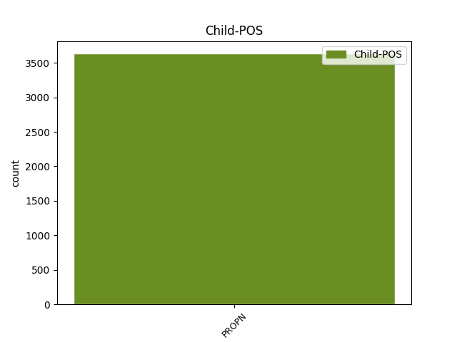

Distribution of features within this leaf



Agreement Rules sorted by frequency.
- When the dependent token is the modifer(mod) of the head token, and the dependent token is PROPN.
1 No _ _ _ _ 0 _ _ _
2 arheoloģiskiem _ _ _ _ 0 _ _ _
3 izrakumiem _ _ _ _ 0 _ _ _
4 gan _ _ _ _ 0 _ _ _
5 redzams _ _ _ _ 0 _ _ _
6 , _ _ _ _ 0 _ _ _
7 ka _ _ _ _ 0 _ _ _
8 liela _ _ _ _ 0 _ _ _
9 dzimstība _ _ _ _ 0 _ _ _
10 neapstiprinās _ _ _ _ 0 _ _ _
11 ( _ _ _ _ 0 _ _ _
12 spriežot _ _ _ _ 0 _ _ _
13 pēc _ _ _ _ 0 _ _ _
14 māju _ _ _ _ 0 _ _ _
15 lieluma _ _ _ _ 0 _ _ _
16 ) _ _ _ _ 0 _ _ _
17 , _ _ _ _ 0 _ _ _
18 jo _ _ _ _ 0 _ _ _
19 liels _ _ _ _ 0 _ _ _
20 iedzīvotāju _ _ _ _ 0 _ _ _
21 skaita _ _ _ _ 0 _ _ _
22 pieaugums _ _ _ _ 0 _ _ _
23 līdzinātos _ _ _ _ 0 _ _ _
24 Āzijas Āzija PROPN npfsg4 Case=Gen|Gender=Fem|Number=Sing 25 mod _ LvtbNodeId=a-z99-p67s5w24
25 dzimstības dzimstība NOUN ncfsg4 Case=Gen|Gender=Fem|Number=Sing 0 _ _ _
26 sprādzienam _ _ _ _ 0 _ _ _
27 . _ _ _ _ 0 _ _ _
1 Pie _ _ _ _ 0 _ _ _
2 pirmās _ _ _ _ 0 _ _ _
3 grupas _ _ _ _ 0 _ _ _
4 var _ _ _ _ 0 _ _ _
5 pieskaitīt _ _ _ _ 0 _ _ _
6 O. _ _ _ _ 0 _ _ _
7 Dankera _ _ _ _ 0 _ _ _
8 , _ _ _ _ 0 _ _ _
9 Alfrēda _ _ _ _ 0 _ _ _
10 Valdmaņa _ _ _ _ 0 _ _ _
11 , _ _ _ _ 0 _ _ _
12 Žaņa _ _ _ _ 0 _ _ _
13 Unāma _ _ _ _ 0 _ _ _
14 , _ _ _ _ 0 _ _ _
15 Fēliksa Fēlikss PROPN npmsg1 Case=Gen|Gender=Masc|Number=Sing 0 _ _ _
16 Cielēna Cielēns PROPN npmsg1 Case=Gen|Gender=Masc|Number=Sing 15 flat@name _ LvtbNodeId=a-z88-p34s1w16
17 atmiņas _ _ _ _ 0 _ _ _
18 . _ _ _ _ 0 _ _ _
1 Aptauja _ _ _ _ 0 _ _ _
2 bija _ _ _ _ 0 _ _ _
3 veikta _ _ _ _ 0 _ _ _
4 Rīgā _ _ _ _ 0 _ _ _
5 , _ _ _ _ 0 _ _ _
6 Jūrmalā _ _ _ _ 0 _ _ _
7 , _ _ _ _ 0 _ _ _
8 Jelgavā _ _ _ _ 0 _ _ _
9 , _ _ _ _ 0 _ _ _
10 Ventspilī _ _ _ _ 0 _ _ _
11 , _ _ _ _ 0 _ _ _
12 Liepājā _ _ _ _ 0 _ _ _
13 , _ _ _ _ 0 _ _ _
14 Valmierā _ _ _ _ 0 _ _ _
15 , _ _ _ _ 0 _ _ _
16 Cēsīs _ _ _ _ 0 _ _ _
17 , _ _ _ _ 0 _ _ _
18 Daugavpilī Daugavpils PROPN npfsl6 Case=Loc|Gender=Fem|Number=Sing 0 _ _ _
19 , _ _ _ _ 0 _ _ _
20 Ludzā Ludza PROPN npfsl4 Case=Loc|Gender=Fem|Number=Sing 18 conj _ LvtbNodeId=a-z91-p30s5w20|SpaceAfter=No
21 . _ _ _ _ 0 _ _ _
1 Vāciešus _ _ _ _ 0 _ _ _
2 tiešām _ _ _ _ 0 _ _ _
3 uztver _ _ _ _ 0 _ _ _
4 kā _ _ _ _ 0 _ _ _
5 atbrīvotājus _ _ _ _ 0 _ _ _
6 un _ _ _ _ 0 _ _ _
7 sagaida _ _ _ _ 0 _ _ _
8 , _ _ _ _ 0 _ _ _
9 ka _ _ _ _ 0 _ _ _
10 tiks _ _ _ _ 0 _ _ _
11 atjaunota _ _ _ _ 0 _ _ _
12 Rietumeiropa Rietumeiropa PROPN npfsd4 Case=Dat|Gender=Fem|Number=Sing|Typo=Yes 13 udep _ CorrectForm=Rietumeiropai|CorrectionType=Spelling|LvtbNodeId=a-z90-p317s2w12
13 raksturīgā raksturīgs ADJ affsnyp Case=Nom|Definite=Def|Degree=Pos|Gender=Fem|Number=Sing 0 _ _ _
14 saimniekošanas _ _ _ _ 0 _ _ _
15 sistēma _ _ _ _ 0 _ _ _
16 ar _ _ _ _ 0 _ _ _
17 privātīpašumu _ _ _ _ 0 _ _ _
18 centrā _ _ _ _ 0 _ _ _
19 . _ _ _ _ 0 _ _ _
1 Nespējot _ _ _ _ 0 _ _ _
2 pārvarēt _ _ _ _ 0 _ _ _
3 objektīvas _ _ _ _ 0 _ _ _
4 un _ _ _ _ 0 _ _ _
5 subjektīvas _ _ _ _ 0 _ _ _
6 pretrunas _ _ _ _ 0 _ _ _
7 starp _ _ _ _ 0 _ _ _
8 kolektīvu _ _ _ _ 0 _ _ _
9 , _ _ _ _ 0 _ _ _
10 teātra _ _ _ _ 0 _ _ _
11 vadītāju vadītājs NOUN ncmsa1 Case=Acc|Gender=Masc|Number=Sing 0 _ _ _
12 , _ _ _ _ 0 _ _ _
13 tobrīd _ _ _ _ 0 _ _ _
14 visu _ _ _ _ 0 _ _ _
15 laiku _ _ _ _ 0 _ _ _
16 starptautiski _ _ _ _ 0 _ _ _
17 ievērojamāko _ _ _ _ 0 _ _ _
18 Latvijas _ _ _ _ 0 _ _ _
19 teātra _ _ _ _ 0 _ _ _
20 režisoru _ _ _ _ 0 _ _ _
21 Ādolfu Ādolfs PROPN npmsa1 Case=Acc|Gender=Masc|Number=Sing 11 appos _ LvtbNodeId=a-z83-p16s4w21
22 Šapiro _ _ _ _ 0 _ _ _
23 un _ _ _ _ 0 _ _ _
24 Kultūras _ _ _ _ 0 _ _ _
25 ministriju _ _ _ _ 0 _ _ _
26 , _ _ _ _ 0 _ _ _
27 kultūras _ _ _ _ 0 _ _ _
28 ministrs _ _ _ _ 0 _ _ _
29 Raimonds _ _ _ _ 0 _ _ _
30 Pauls _ _ _ _ 0 _ _ _
31 1992. _ _ _ _ 0 _ _ _
32 gadā _ _ _ _ 0 _ _ _
33 pieņem _ _ _ _ 0 _ _ _
34 lēmumu _ _ _ _ 0 _ _ _
35 par _ _ _ _ 0 _ _ _
36 Jaunatnes _ _ _ _ 0 _ _ _
37 teātra _ _ _ _ 0 _ _ _
38 likvidēšanu _ _ _ _ 0 _ _ _
39 . _ _ _ _ 0 _ _ _
1 Kā _ _ _ _ 0 _ _ _
2 norādījis norādīt VERB vmnpdmsnasnpn Aspect=Perf|Case=Nom|Definite=Ind|Degree=Pos|Gender=Masc|Number=Sing|Polarity=Pos|Tense=Past|VerbForm=Part|Voice=Act 0 _ _ _
3 tiesību _ _ _ _ 0 _ _ _
4 zinātnieks _ _ _ _ 0 _ _ _
5 Egils _ _ _ _ 0 _ _ _
6 Levits _ _ _ _ 0 _ _ _
7 [ _ _ _ _ 0 _ _ _
8 Levits Levits PROPN npmsn1 Case=Nom|Gender=Masc|Number=Sing 2 parataxis _ LvtbNodeId=a-z87-p29s1w8|SpaceAfter=No
9 , _ _ _ _ 0 _ _ _
10 2014 _ _ _ _ 0 _ _ _
11 ] _ _ _ _ 0 _ _ _
12 , _ _ _ _ 0 _ _ _
13 ģimene _ _ _ _ 0 _ _ _
14 ir _ _ _ _ 0 _ _ _
15 ļoti _ _ _ _ 0 _ _ _
16 sena _ _ _ _ 0 _ _ _
17 , _ _ _ _ 0 _ _ _
18 viena _ _ _ _ 0 _ _ _
19 no _ _ _ _ 0 _ _ _
20 sākotnējām _ _ _ _ 0 _ _ _
21 sabiedrības _ _ _ _ 0 _ _ _
22 vienībām _ _ _ _ 0 _ _ _
23 . _ _ _ _ 0 _ _ _
1 Izdevums _ _ _ _ 0 _ _ _
2 « _ _ _ _ 0 _ _ _
3 The _ _ _ _ 0 _ _ _
4 national _ _ _ _ 0 _ _ _
5 Equirer _ _ _ _ 0 _ _ _
6 » _ _ _ _ 0 _ _ _
7 paziņojis _ _ _ _ 0 _ _ _
8 , _ _ _ _ 0 _ _ _
9 ka _ _ _ _ 0 _ _ _
10 aktierim _ _ _ _ 0 _ _ _
11 Čārlijam Čārlijs PROPN npmsd1 Case=Dat|Gender=Masc|Number=Sing 13 comp:obl _ LvtbNodeId=a-p7324-p1s1w11
12 Šīnam _ _ _ _ 0 _ _ _
13 diagnosticēts diagnosticēt VERB vmnpdmsnpsnpn Aspect=Perf|Case=Nom|Definite=Ind|Degree=Pos|Gender=Masc|Number=Sing|Polarity=Pos|Tense=Past|VerbForm=Part|Voice=Pass 0 _ _ _
14 HIV _ _ _ _ 0 _ _ _
15 . _ _ _ _ 0 _ _ _
1 Šarlote Šarlote PROPN npfsn5 Case=Nom|Gender=Fem|Number=Sing 2 subj@pass _ LvtbNodeId=a-p6354-p3s1w1
2 kristīta kristīt VERB vmnpdfsnpsnpn Aspect=Perf|Case=Nom|Definite=Ind|Degree=Pos|Gender=Fem|Number=Sing|Polarity=Pos|Tense=Past|VerbForm=Part|Voice=Pass 0 _ _ _
3 tajā _ _ _ _ 0 _ _ _
4 pašā _ _ _ _ 0 _ _ _
5 tērpā _ _ _ _ 0 _ _ _
6 , _ _ _ _ 0 _ _ _
7 kurā _ _ _ _ 0 _ _ _
8 tika _ _ _ _ 0 _ _ _
9 kristīts _ _ _ _ 0 _ _ _
10 viņas _ _ _ _ 0 _ _ _
11 brālis _ _ _ _ 0 _ _ _
12 - _ _ _ _ 0 _ _ _
13 princis _ _ _ _ 0 _ _ _
14 Džordžs _ _ _ _ 0 _ _ _
15 . _ _ _ _ 0 _ _ _
1 Līdz _ _ _ _ 0 _ _ _
2 2012. _ _ _ _ 0 _ _ _
3 gada _ _ _ _ 0 _ _ _
4 nogalei _ _ _ _ 0 _ _ _
5 A. _ _ _ _ 0 _ _ _
6 Hermanis _ _ _ _ 0 _ _ _
7 iestudējis _ _ _ _ 0 _ _ _
8 piecdesmit _ _ _ _ 0 _ _ _
9 deviņas _ _ _ _ 0 _ _ _
10 izrādes _ _ _ _ 0 _ _ _
11 – _ _ _ _ 0 _ _ _
12 no _ _ _ _ 0 _ _ _
13 tām _ _ _ _ 0 _ _ _
14 deviņas _ _ _ _ 0 _ _ _
15 tapušas _ _ _ _ 0 _ _ _
16 Vācijā _ _ _ _ 0 _ _ _
17 , _ _ _ _ 0 _ _ _
18 četras _ _ _ _ 0 _ _ _
19 Austrijā _ _ _ _ 0 _ _ _
20 , _ _ _ _ 0 _ _ _
21 trīs _ _ _ _ 0 _ _ _
22 Šveicē _ _ _ _ 0 _ _ _
23 , _ _ _ _ 0 _ _ _
24 divas _ _ _ _ 0 _ _ _
25 Igaunijā _ _ _ _ 0 _ _ _
26 , _ _ _ _ 0 _ _ _
27 pa _ _ _ _ 0 _ _ _
28 vienai viens NUM mcsfsd Case=Dat|Gender=Fem|Number=Sing|NumType=Card 0 _ _ _
29 – _ _ _ _ 0 _ _ _
30 Itālijā Itālija PROPN npfsl4 Case=Loc|Gender=Fem|Number=Sing 28 orphan _ LvtbNodeId=a-z83-p3s1w30
31 un _ _ _ _ 0 _ _ _
32 Krievijā _ _ _ _ 0 _ _ _
33 . _ _ _ _ 0 _ _ _
1 Izstādē _ _ _ _ 0 _ _ _
2 būs _ _ _ _ 0 _ _ _
3 apskatāmi _ _ _ _ 0 _ _ _
4 dažādi _ _ _ _ 0 _ _ _
5 “ _ _ _ _ 0 _ _ _
6 Līvus Līvi PROPN npmda1 Case=Acc|Gender=Masc|Number=Ptan 8 comp:obj _ LvtbNodeId=a-p9385-p4s1w6|SpaceAfter=No
7 ” _ _ _ _ 0 _ _ _
8 raksturojoši raksturot VERB vmnpdmpnapnpn Aspect=Imp|Case=Nom|Definite=Ind|Degree=Pos|Gender=Masc|Number=Plur|Polarity=Pos|Tense=Pres|VerbForm=Part|Voice=Act 0 _ _ _
9 priekšmeti _ _ _ _ 0 _ _ _
10 – _ _ _ _ 0 _ _ _
11 fotogrāfijas _ _ _ _ 0 _ _ _
12 , _ _ _ _ 0 _ _ _
13 kuras _ _ _ _ 0 _ _ _
14 izkārtotas _ _ _ _ 0 _ _ _
15 laika _ _ _ _ 0 _ _ _
16 līnijā _ _ _ _ 0 _ _ _
17 , _ _ _ _ 0 _ _ _
18 lai _ _ _ _ 0 _ _ _
19 atspoguļotu _ _ _ _ 0 _ _ _
20 grupas _ _ _ _ 0 _ _ _
21 darbību _ _ _ _ 0 _ _ _
22 no _ _ _ _ 0 _ _ _
23 pirmsākumiem _ _ _ _ 0 _ _ _
24 līdz _ _ _ _ 0 _ _ _
25 2010. _ _ _ _ 0 _ _ _
26 gadam _ _ _ _ 0 _ _ _
27 , _ _ _ _ 0 _ _ _
28 kad _ _ _ _ 0 _ _ _
29 tiek _ _ _ _ 0 _ _ _
30 paziņots _ _ _ _ 0 _ _ _
31 par _ _ _ _ 0 _ _ _
32 grupas _ _ _ _ 0 _ _ _
33 darbības _ _ _ _ 0 _ _ _
34 beigām _ _ _ _ 0 _ _ _
35 . _ _ _ _ 0 _ _ _
1 Tas tas PRON pd3msnn Case=Nom|Gender=Masc|Number=Sing|Person=3|PronType=Dem 0 _ _ _
2 , _ _ _ _ 0 _ _ _
3 kurš _ _ _ _ 0 _ _ _
4 to _ _ _ _ 0 _ _ _
5 saņem _ _ _ _ 0 _ _ _
6 , _ _ _ _ 0 _ _ _
7 piemēram _ _ _ _ 0 _ _ _
8 , _ _ _ _ 0 _ _ _
9 Uldis Uldis PROPN npmsn2 Case=Nom|Gender=Masc|Number=Sing 1 discourse _ LvtbNodeId=a-p3762-p48s13w9
10 Bērziņš _ _ _ _ 0 _ _ _
11 , _ _ _ _ 0 _ _ _
12 tā _ _ _ _ 0 _ _ _
13 ir _ _ _ _ 0 _ _ _
14 ļoti _ _ _ _ 0 _ _ _
15 adekvāta _ _ _ _ 0 _ _ _
16 lieta _ _ _ _ 0 _ _ _
17 . _ _ _ _ 0 _ _ _
1 Zolitūdes _ _ _ _ 0 _ _ _
2 traģēdija _ _ _ _ 0 _ _ _
3 ir _ _ _ _ 0 _ _ _
4 lielākā liels ADJ affsnyc Case=Nom|Definite=Def|Degree=Cmp|Gender=Fem|Number=Sing 0 _ _ _
5 Latvijā Latvija PROPN npfsl4 Case=Loc|Gender=Fem|Number=Sing 4 unk _ LvtbNodeId=a-p16326-p12s2w5
6 kopš _ _ _ _ 0 _ _ _
7 neatkarības _ _ _ _ 0 _ _ _
8 atjaunošanas _ _ _ _ 0 _ _ _
9 . _ _ _ _ 0 _ _ _
1 Kā _ _ _ _ 0 _ _ _
2 atklājusi _ _ _ _ 0 _ _ _
3 Valsts _ _ _ _ 0 _ _ _
4 kontrole _ _ _ _ 0 _ _ _
5 , _ _ _ _ 0 _ _ _
6 aģentūra _ _ _ _ 0 _ _ _
7 " _ _ _ _ 0 _ _ _
8 Pilsētsaimniecība Pilsētsaimniecība PROPN npfsn4 Case=Nom|Gender=Fem|Number=Sing 11 comp:pred _ LvtbNodeId=a-p3731-p7s1w8|SpaceAfter=No
9 " _ _ _ _ 0 _ _ _
10 ir _ _ _ _ 0 _ _ _
11 izlietojusi izlietot VERB vmnpdfsnasnpn Aspect=Perf|Case=Nom|Definite=Ind|Degree=Pos|Gender=Fem|Number=Sing|Polarity=Pos|Tense=Past|VerbForm=Part|Voice=Act 0 _ _ _
12 36 000 _ _ _ _ 0 _ _ _
13 latu _ _ _ _ 0 _ _ _
14 atlīdzībai _ _ _ _ 0 _ _ _
15 un _ _ _ _ 0 _ _ _
16 valsts _ _ _ _ 0 _ _ _
17 sociālās _ _ _ _ 0 _ _ _
18 apdrošināšanas _ _ _ _ 0 _ _ _
19 iemaksām _ _ _ _ 0 _ _ _
20 par _ _ _ _ 0 _ _ _
21 laiku _ _ _ _ 0 _ _ _
22 , _ _ _ _ 0 _ _ _
23 kurā _ _ _ _ 0 _ _ _
24 darbinieki _ _ _ _ 0 _ _ _
25 neveica _ _ _ _ 0 _ _ _
26 pamatdarba _ _ _ _ 0 _ _ _
27 pienākumus _ _ _ _ 0 _ _ _
28 , _ _ _ _ 0 _ _ _
29 bet _ _ _ _ 0 _ _ _
30 piedalījās _ _ _ _ 0 _ _ _
31 projekta _ _ _ _ 0 _ _ _
32 " _ _ _ _ 0 _ _ _
33 Pašvaldības _ _ _ _ 0 _ _ _
34 un _ _ _ _ 0 _ _ _
35 privātās _ _ _ _ 0 _ _ _
36 partnerības _ _ _ _ 0 _ _ _
37 veicināšana _ _ _ _ 0 _ _ _
38 Jelgavas _ _ _ _ 0 _ _ _
39 pilsētas _ _ _ _ 0 _ _ _
40 ielu _ _ _ _ 0 _ _ _
41 apsaimniekošanā _ _ _ _ 0 _ _ _
42 " _ _ _ _ 0 _ _ _
43 īstenošanā _ _ _ _ 0 _ _ _
44 , _ _ _ _ 0 _ _ _
45 par _ _ _ _ 0 _ _ _
46 ko _ _ _ _ 0 _ _ _
47 saņēma _ _ _ _ 0 _ _ _
48 atlīdzību _ _ _ _ 0 _ _ _
49 no _ _ _ _ 0 _ _ _
50 projekta _ _ _ _ 0 _ _ _
51 līdzekļiem _ _ _ _ 0 _ _ _
52 . _ _ _ _ 0 _ _ _
Disagree Examples:
1 Majestātiska _ _ _ _ 0 _ _ _
2 savā _ _ _ _ 0 _ _ _
3 garajā _ _ _ _ 0 _ _ _
4 , _ _ _ _ 0 _ _ _
5 krāšņajā _ _ _ _ 0 _ _ _
6 pašas _ _ _ _ 0 _ _ _
7 Atēnas Atēna PROPN npfsg4 Case=Gen|Gender=Fem|Number=Sing 8 udep _ LvtbNodeId=a-c15-p10s4w7
8 austajā aust VERB vmnpdmslpsypn Aspect=Perf|Case=Loc|Definite=Def|Degree=Pos|Gender=Masc|Number=Sing|Polarity=Pos|Tense=Past|VerbForm=Part|Voice=Pass 0 _ _ _
9 tērpā _ _ _ _ 0 _ _ _
10 , _ _ _ _ 0 _ _ _
11 viņa _ _ _ _ 0 _ _ _
12 brauc _ _ _ _ 0 _ _ _
13 lejup _ _ _ _ 0 _ _ _
14 no _ _ _ _ 0 _ _ _
15 Olimpa _ _ _ _ 0 _ _ _
16 ratos _ _ _ _ 0 _ _ _
17 , _ _ _ _ 0 _ _ _
18 kuros _ _ _ _ 0 _ _ _
19 ir _ _ _ _ 0 _ _ _
20 iejūgti _ _ _ _ 0 _ _ _
21 2 _ _ _ _ 0 _ _ _
22 nemirstīgi _ _ _ _ 0 _ _ _
23 zirgi _ _ _ _ 0 _ _ _
24 . _ _ _ _ 0 _ _ _
1 Visa _ _ _ _ 0 _ _ _
2 dzīvā _ _ _ _ 0 _ _ _
3 radība _ _ _ _ 0 _ _ _
4 noliecas _ _ _ _ 0 _ _ _
5 Olimpa Olimps PROPN npmsg1 Case=Gen|Gender=Masc|Number=Sing 6 mod _ LvtbNodeId=a-c15-p10s7w5
6 valdnieces valdniece NOUN ncfsg5 Case=Gen|Gender=Fem|Number=Sing 0 _ _ _
7 priekšā _ _ _ _ 0 _ _ _
8 . _ _ _ _ 0 _ _ _
1 Pēc _ _ _ _ 0 _ _ _
2 sižeta _ _ _ _ 0 _ _ _
3 ‘’ _ _ _ _ 0 _ _ _
4 Antigone _ _ _ _ 0 _ _ _
5 ’’ _ _ _ _ 0 _ _ _
6 ir _ _ _ _ 0 _ _ _
7 Eshila Eshils PROPN npmsg1 Case=Gen|Gender=Masc|Number=Sing 8 mod _ LvtbNodeId=a-c15-p36s1w7
8 traģēdijas traģēdija NOUN ncfsg4 Case=Gen|Gender=Fem|Number=Sing 0 _ _ _
9 ‘’ _ _ _ _ 0 _ _ _
10 Septiņi _ _ _ _ 0 _ _ _
11 pret _ _ _ _ 0 _ _ _
12 Tēbām _ _ _ _ 0 _ _ _
13 ’’ _ _ _ _ 0 _ _ _
14 turpinājums _ _ _ _ 0 _ _ _
15 . _ _ _ _ 0 _ _ _
1 Eshila Eshils PROPN npmsg1 Case=Gen|Gender=Masc|Number=Sing 2 mod _ LvtbNodeId=a-c15-p36s2w1
2 traģēdijā traģēdija NOUN ncfsl4 Case=Loc|Gender=Fem|Number=Sing 0 _ _ _
3 stāstīts _ _ _ _ 0 _ _ _
4 par _ _ _ _ 0 _ _ _
5 Tēbu _ _ _ _ 0 _ _ _
6 valdnieka _ _ _ _ 0 _ _ _
7 Edipa _ _ _ _ 0 _ _ _
8 dēlu _ _ _ _ 0 _ _ _
9 Eteokla _ _ _ _ 0 _ _ _
10 un _ _ _ _ 0 _ _ _
11 Polineika _ _ _ _ 0 _ _ _
12 cīņu _ _ _ _ 0 _ _ _
13 par _ _ _ _ 0 _ _ _
14 varu _ _ _ _ 0 _ _ _
15 . _ _ _ _ 0 _ _ _
1 Eshila _ _ _ _ 0 _ _ _
2 traģēdijā _ _ _ _ 0 _ _ _
3 stāstīts _ _ _ _ 0 _ _ _
4 par _ _ _ _ 0 _ _ _
5 Tēbu Tēbas PROPN npfdg4 Case=Gen|Gender=Fem|Number=Ptan 6 mod _ LvtbNodeId=a-c15-p36s2w5
6 valdnieka valdnieks NOUN ncmsg1 Case=Gen|Gender=Masc|Number=Sing 0 _ _ _
7 Edipa _ _ _ _ 0 _ _ _
8 dēlu _ _ _ _ 0 _ _ _
9 Eteokla _ _ _ _ 0 _ _ _
10 un _ _ _ _ 0 _ _ _
11 Polineika _ _ _ _ 0 _ _ _
12 cīņu _ _ _ _ 0 _ _ _
13 par _ _ _ _ 0 _ _ _
14 varu _ _ _ _ 0 _ _ _
15 . _ _ _ _ 0 _ _ _